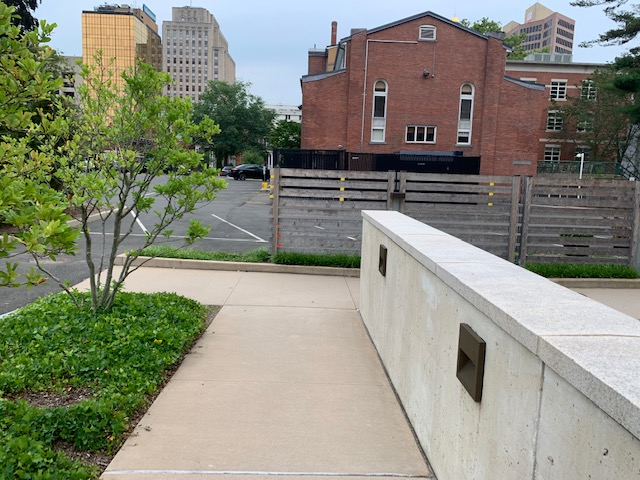
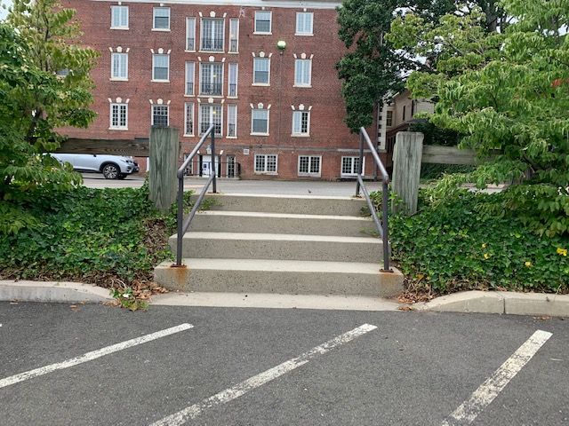

The Ramp
The ramp is a smooth and long incline in front of Hendrie Hall with a wide curb at the end. Ollying over the curve is great way to learn to clear ground obstacles because the ramp allows you to build up enough speed. My only caution is that there is a wooden fence next to it so be wary of your arms when clearing the curb. Outside of working on balance without pushing off, you can also practice your tic tacs and carving by trying to turn into the hendrie curb or riding off the bottom of the ramp.
The Four Stair
I would only recommend trying the 4 stair if you have a couple of months of practice and are really comfortable with your Ollies. The stairs are long and there is decently tall which also makes them perfect for firecrackering down them. The stairs also have rails for those that really want to tempt fate.
 Previous page Take me there